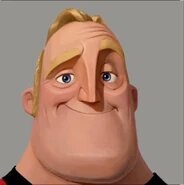

HTML/CSS Välilehtivalikko
Lähde: Radio tabs on pure css by Mishko Vladimir codepen
Rakenne
- Aloita tekemällä d14 kansion index.html ja style.css
- Alusta index.html-tiedosto VS-Coden tarjoamalla HTML-pohjalla ja linkitä srtyle.css headiin
- Lisää bodyyn main-tagi, jonka sisälle muut tagit tulevat
- Tee radiobutton-ryhmä, jossa on 4 kohtaa
- Kullakin radiobuttonilla on input- ja siihen liitetty label-kenttä
- Lisää kaikkiin radionappeihin sama name="tabs" -kenttä, jolloin ne liitetään samaan ryhmään
- Sen sijaan id="tab1" kentän arvo on kullakin yksilöivä (tab1, tab2, tab3, tab4)
- koska label-tagin for="tab1" kenttä liittää tekstin tiettyyn nappiin
- Lisää radionappien jälkeen div kullekin välilehdelle, joilla on yksilöivä luokka
class="tab content1" (content1, content2, content3, content4) - Voit siis antaa useita classeja samale elementille
- input-kentillä on geneerinen luokka menubtn ja yksilöivä id tab{x}
- Kaikilla sisältödiveillä on geneerinen luokka tab ja yksilöivä luokka content{x}
- Ensin CSS:llä piilotetaan kaikki .tab luokan kentät
.tab { display: none; } - Sitten palautetaan valittuun välilehteen liittyvä sisältö:
#tab1:checked ~ .tab.content1{display: block;}
Sisältö
Gameplay
- kohdan sisältö on toteutettu radionapeilla
- Vaikeustasoa kuvaava kuva on tyhjä div jolla on luokka 'avatar'
- CSS:llä voidaan tehdä muutoksia sisaruselementteihin, sen perusteella onko valintanappi/laatikko valittu
- Yhdistetään siis checked ja siblin -selektorit:
- #easy:checked ~ .avatar{...
- CSS sisarus-selektori = General Sibling Selector
- CSS :checked Selector

Controls
- Välilehden sisältö on taulukossa
- Näppäimet ovat input kenttiä, joilla on type="text"
- Siten käyttäjä voi kirjoittaa kirjaimen tilalle toisen
Graphics / Display
- Graphics välilehden sisältö on tehty select-tagilla
- Select-tagin sisälle tulee useita option-kenttiä, joissa on resoluutiovaihtoehtoja
- Lisää listan alle myös yksittäinen checkbox
Audio
- Slider on tehty kentällä input type="range"
- Lisää kaiuttimen kuva esim. font awesomesta